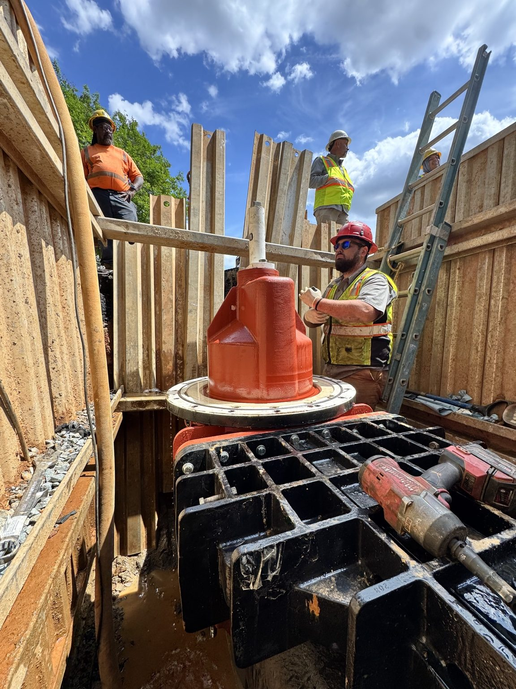
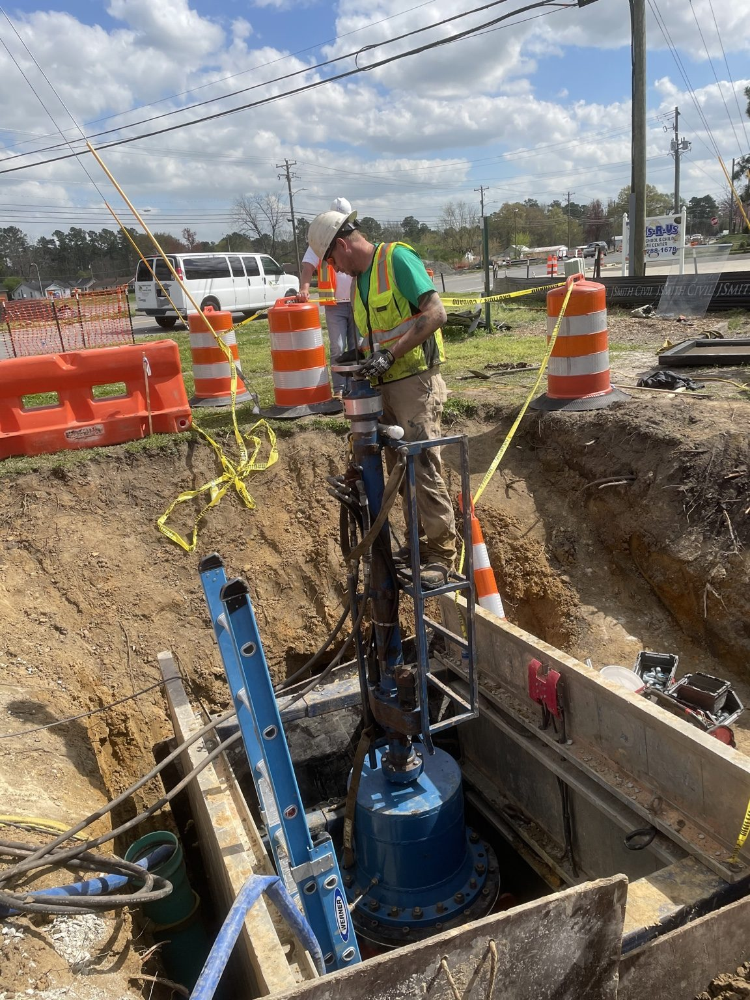
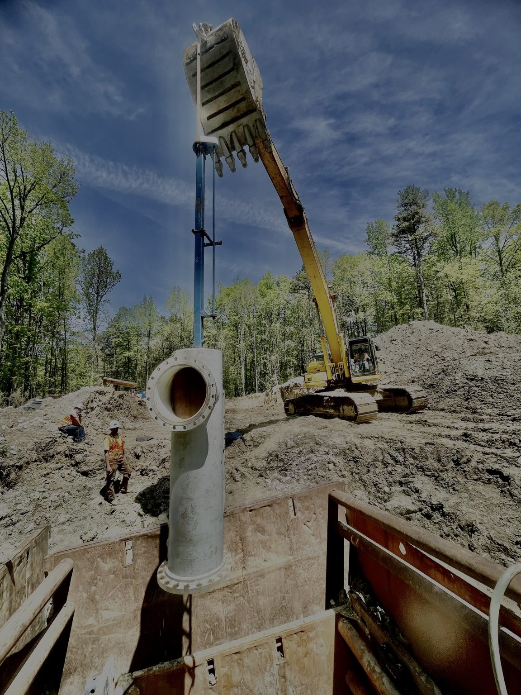
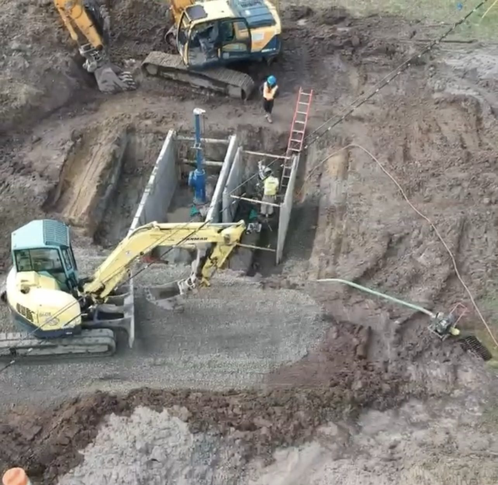
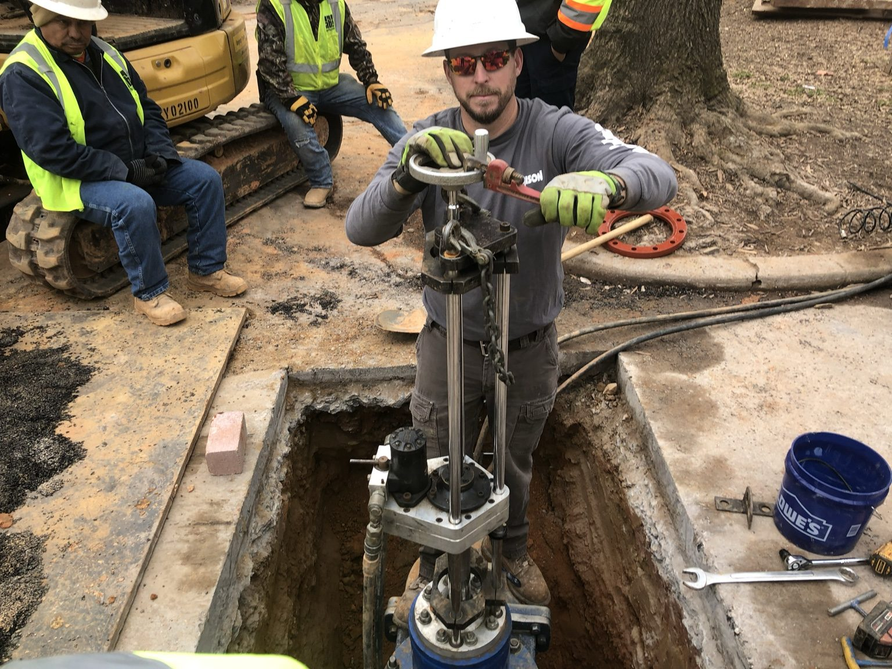

Underground
Educational documentaries about the history, materials, failures, and evolution of underground infrastructure.
Real crews. Real infrastructure. Real stories.
Most people never think about the infrastructure beneath their feet — until it fails. Under Pressure USA uncovers the engineering, innovation, and people who keep our communities running.
Beneath every city is a story
Under Pressure USA began as a way to show the world the niche business of hot taps, line stops, and valve inserts. It has grown into something bigger: telling the story of underground infrastructure, the history behind it, and the crews who keep it operating.
Featured Documentary Series
Short documentary-style stories about the pipe, systems, failures, and fixes that shaped modern infrastructure.
From wood pipe to cast iron, PVC, asbestos cement, HDPE, PCCP, and beyond — every episode brings another piece of buried history to the surface.
View the channel →What we do
Educational documentaries about the history, materials, failures, and evolution of underground infrastructure.
Conversations with the people behind the work — real stories, shop talk, and the crew side of the industry.
Real jobsite footage showing hot taps, line stops, valve inserts, equipment, and the scale of the work.
In the Field
Every image comes from actual field work — the dirt, the equipment, the crews, and the systems that keep water moving.

A temporary line stop allows crews to isolate a section of water main so repairs or modifications can be completed while the rest of the system remains in service.

A line stop sleeve is installed on a pressurized water main before a temporary line stop is performed. It creates the connection point needed to isolate a section of pipeline.

John installs a valve insert on a live water main. This process adds a permanent valve without taking the pipeline out of service, reducing outages and improving reliability.

Large-diameter water systems require planning, equipment, and coordination that most people never get to see from street level.

Sometimes the only way to appreciate the scale of underground infrastructure is from above.

Meet John
Under Pressure USA started as a way to show people the niche work involved in hot taps, line stops, and valve inserts. Over time, it turned into a larger mission: telling the story of the infrastructure beneath every city.
Through documentary-style videos, field footage, and real-world experience, Under Pressure USA gives viewers a look into a world they rarely get to see.
Follow the journey
Watch the documentaries, follow the field stories, and connect with Under Pressure USA across social media.